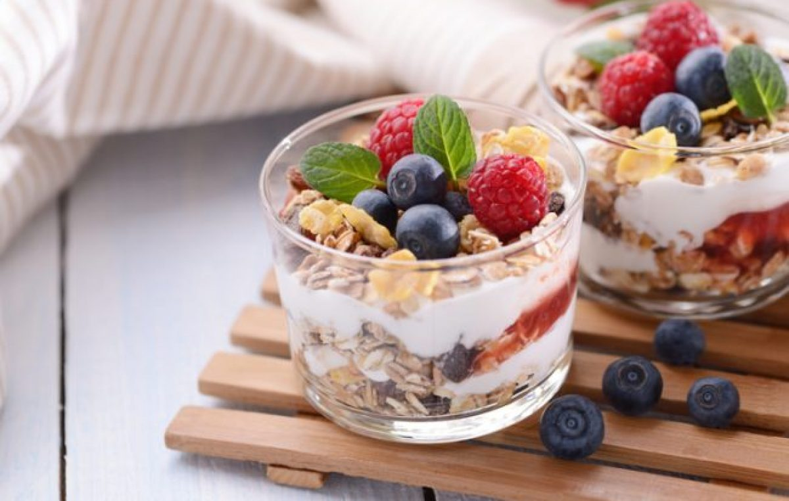

Time: 15 minutes
Cost: $7.00
Servings: 2
1. Use a medium size tumbler or parfait cups and for each serving, layer 1/4 cup each of yogurt and fruit in the parfait dish.
2. Repeat each layer, then do the same for the other parfaits.
3. Sprinkle with the topping of choice, and serve.
Source: http://www.vegkitchen.com/recipes/fruit-and-yogurt-parfaits/